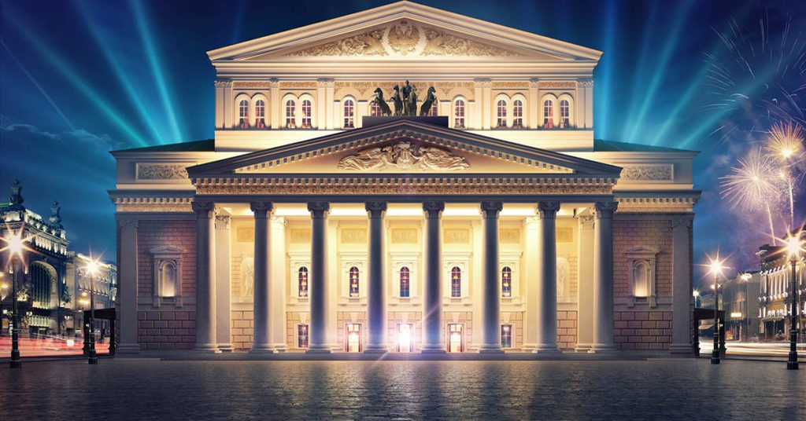
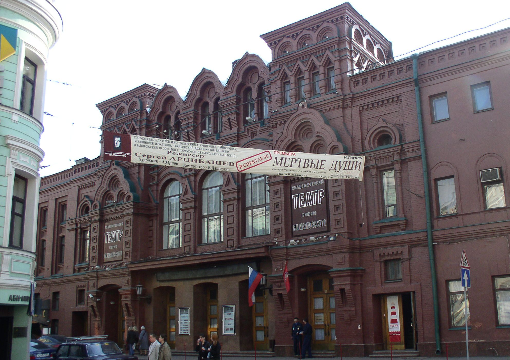

Театры в Москве
О нас
Все театры

Большой театр
Государственный академический Большой театр России (ГАБТ), или просто Большой театр — один из крупнейших в России и один из самых значительных в мире театров оперы и балета. Изначально театр был частным, но с 1794 стал казённым, составляющим вместе с Малым единую московскую труппу императорских театров...
Театр Ленком
Российский государственный драматический театр, расположенный в Тверском районе города Москвы. В 1927 году по инициативе Московского комсомола был основан Центральный Театр рабочей молодёжи (ТРАМ). Открытие прошло 1 октября. В него приняли участников заводских и районных театров, а также...

Театр им. Маяковского
Один из самых старых драматических театров Москвы. Основу репертуара составляют спектакли, поставленные по мотивам произведений русской классической литературы. Современное название и посвящение Владимиру Маяковскому театр получил в 1954 году, а через десять лет ему присвоили...
МХТ
Московский Художественный театр — драматический театр, основанный Константином Сергеевичем Станиславским и Владимиром Ивановичем Немировичем-Данченко. В 1987 году разделился на два театра, взявших себе официальные наименования: Московский Художественный академический...
Театр Cовременник
Театр основан в 1956 году группой молодых актёров — выпускников Школы-студии МХАТ. Актёры собирались на добровольных началах.Изначально актёрская студия взяла название «Студия молодых актёров», которое отражало демократический дух группы. Создание современного молодёжного театра стало...